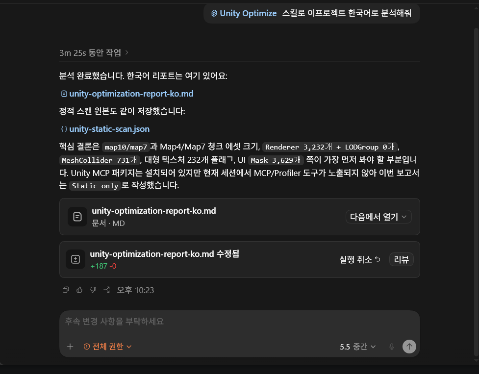
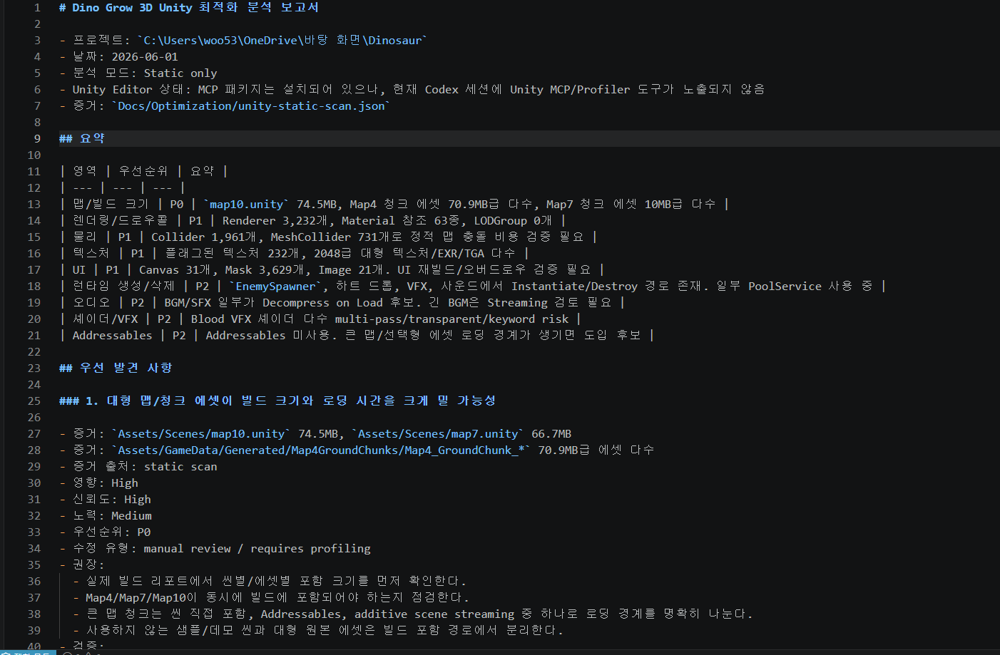
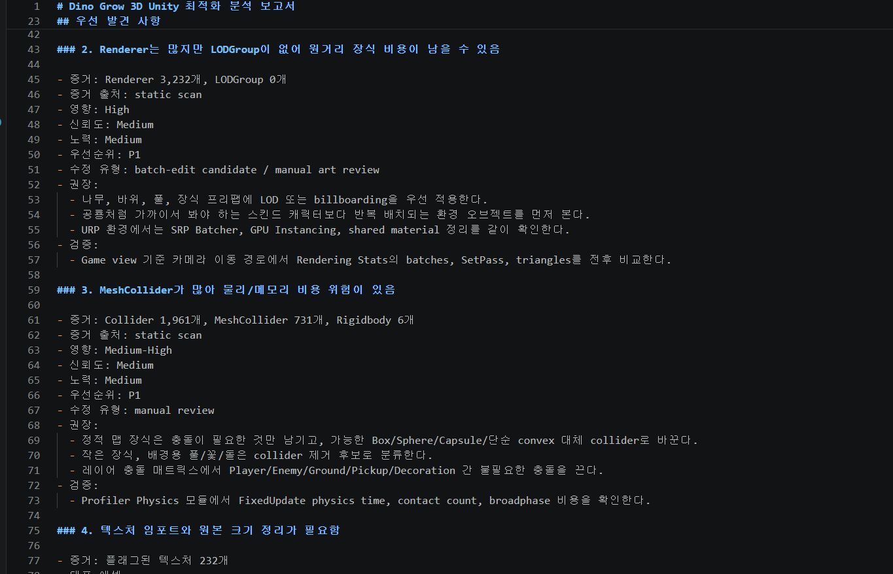
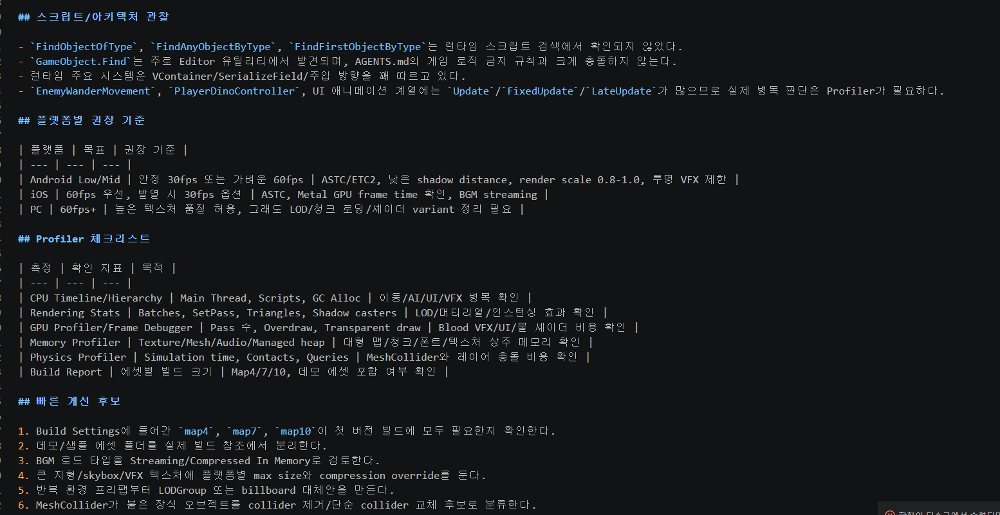

Unity Performance Audit Skill은 Codex에서 Unity 프로젝트를 분석할 때 사용하는 최적화 감사용 스킬입니다. 프로젝트 파일, 에셋 메타데이터, 스크립트 패턴, 빌드 크기 후보를 정적으로 스캔하고, 사람이 바로 검토할 수 있는 Markdown 리포트로 정리합니다.
Dino Grow 3D 프로젝트에 적용해 맵 크기, Renderer 수, LODGroup 누락, MeshCollider 사용량, 대형 텍스처, UI Mask 위험, 오디오 로드 타입 같은 항목을 우선순위 기반으로 분류했습니다.
Unity 프로젝트 최적화는 Profiler를 켜기 전에도 먼저 확인해야 할 반복 항목이 많습니다. 대형 텍스처, 불필요한 MeshCollider, LOD 누락, 샘플 에셋의 빌드 포함 여부, UI Mask 과다 사용처럼 프로젝트 파일만 훑어도 위험 후보를 빠르게 좁힐 수 있는 부분이 있습니다.
이 스킬은 그런 초기 점검 과정을 자동화하기 위해 만들었습니다. Codex가 프로젝트를 읽고 바로 결론을 내리는 방식이 아니라, Python 정적 스캐너가 JSON 증거를 만들고, Skill 지침이 그 증거를 바탕으로 영향도와 검증 방법을 정리하도록 설계했습니다.
각 발견 사항에 파일 경로, 개수, 크기, 신뢰도, 영향도, 후속 검증 방법을 붙여 검토 가능한 보고서가 되도록 했습니다.
정적 스캔으로 의심 지점을 찾고, 실제 병목 여부는 Unity Profiler, Frame Debugger, Memory Profiler에서 확인하도록 분리했습니다.
렌더링, 물리, 텍스처, 오디오, UI, Addressables, 빌드 크기처럼 Unity 프로젝트에서 자주 문제 되는 영역을 나눠 분석합니다.
자동 수정이 가능한 후보와 아트/기획 판단이 필요한 항목을 구분해, 무작정 고치는 도구가 아니라 리뷰를 돕는 도구로 만들었습니다.
Dino Grow 3D 프로젝트에 적용했을 때, 큰 맵 씬과 청크 에셋이 빌드 크기와 로딩 시간에 영향을 줄 수 있다는 점을 P0로 분류했습니다. 또한 Renderer 3,232개 대비 LODGroup이 0개라는 점, MeshCollider 731개, Mask 3,629개 같은 수치를 근거로 후속 최적화 우선순위를 정리했습니다.
이 결과는 바로 수정 명령으로 이어지는 것이 아니라, 실제 Game View 이동 경로에서 Rendering Stats를 비교하고, Physics Profiler로 FixedUpdate 비용을 확인하며, Build Report로 포함 에셋 크기를 검증하는 체크리스트로 이어지게 했습니다.
# Dino Grow 3D Unity 최적화 분석 보고서 - 프로젝트: C:\Users\woo53\OneDrive\바탕 화면\Dinosaur - 날짜: 2026-06-01 - 분석 모드: Static only - 증거: Docs/Optimization/unity-static-scan.json ## 요약 | 영역 | 우선순위 | 요약 | | --- | --- | --- | | 맵/빌드 크기 | P0 | map10.unity 74.5MB, Map4 청크 에셋 70.9MB급 다수, Map7 청크 에셋 10MB급 다수 | | 렌더링/드로우콜 | P1 | Renderer 3,232개, Material 참조 63종, LODGroup 0개 | | 물리 | P1 | Collider 1,961개, MeshCollider 731개로 정적 맵 충돌 비용 검증 필요 | | 텍스처 | P1 | 플래그된 텍스처 232개, 2048급 대형 텍스처, EXR/TGA 다수 | | UI | P1 | Canvas 31개, Mask 3,629개, Image 21개, UI 오버드로우 검증 필요 | | 런타임 생성/삭제 | P2 | EnemySpawner, 하트 드롭, VFX, 사운드에 Instantiate/Destroy 경로 존재 | | 오디오 | P2 | BGM/SFX 일부가 Decompress on Load 후보, 긴 BGM은 Streaming 검토 필요 | | Addressables | P2 | 미사용 상태. 큰 맵/선택형 에셋 로딩 경계가 생기면 도입 후보 | ## 우선 발견 사항 ### 1. 대형 맵/청크 에셋이 빌드 크기와 로딩 시간을 크게 밀 가능성 - 증거: Assets/Scenes/map10.unity 74.5MB, Assets/Scenes/map7.unity 66.7MB - 증거: Assets/GameData/Generated/Map4GroundChunks/Map4_GroundChunk_* 70.9MB급 에셋 다수 - 증거 출처: static scan - 영향: High - 신뢰도: High - 노력: Medium - 우선순위: P0 - 수정 유형: manual review / requires profiling - 권장: - 실제 빌드 리포트에서 씬별/에셋별 포함 크기를 먼저 확인한다. - Map4/Map7/Map10이 동시에 빌드에 포함되어야 하는지 점검한다. - 큰 맵 청크는 직접 포함, Addressables, additive scene streaming 중 하나로 로딩 경계를 명확히 나눈다. - 사용하지 않는 샘플/데모 씬과 대형 원본 에셋은 빌드 포함 경로에서 분리한다. ### 2. Renderer는 많지만 LODGroup이 없어 원거리 장식 비용이 남을 수 있음 - 증거: Renderer 3,232개, LODGroup 0개 - 증거 출처: static scan - 영향: High - 신뢰도: Medium - 노력: Medium - 우선순위: P1 - 수정 유형: batch-edit candidate / manual art review - 권장: - 나무, 바위, 풀, 장식 프리팹에 LOD 또는 billboarding을 우선 적용한다. - 공룡처럼 가까이서 봐야 하는 스킨드 캐릭터보다 반복 배치되는 환경 오브젝트를 먼저 본다. - URP 환경에서는 SRP Batcher, GPU Instancing, shared material 정리를 같이 확인한다. ### 3. MeshCollider가 많아 물리/메모리 비용 위험이 있음 - 증거: Collider 1,961개, MeshCollider 731개, Rigidbody 6개 - 증거 출처: static scan - 영향: Medium-High - 신뢰도: Medium - 노력: Medium - 우선순위: P1 - 수정 유형: manual review - 권장: - 정적 맵 장식은 충돌이 필요한 것만 남기고 가능한 Box/Sphere/Capsule/단순 convex 대체 collider로 바꾼다. - 작은 장식, 배경용 풀/꽃 쪽 collider 제거 후보를 분류한다. - 레이어 충돌 매트릭스에서 Player/Enemy/Ground/Pickup/Decoration 간 불필요한 충돌을 끈다. ## Profiler 체크리스트 | 측정 | 확인 지표 | 목적 | | --- | --- | --- | | CPU Timeline/Hierarchy | Main Thread, Scripts, GC Alloc | 이동/AI/UI/VFX 병목 확인 | | Rendering Stats | Batches, SetPass, Triangles, Shadow casters | LOD/머티리얼/인스턴싱 효과 확인 | | GPU Profiler/Frame Debugger | Pass 수, Overdraw, Transparent draw | Blood VFX/UI/물 셰이더 비용 확인 | | Memory Profiler | Texture/Mesh/Audio/Managed heap | 대형 맵 청크/폰트/텍스처 상주 메모리 확인 | | Physics Profiler | Simulation time, Contacts, Queries | MeshCollider와 레이어 충돌 비용 확인 | | Build Report | 에셋별 빌드 크기 | Map4/7/10, 데모 에셋 포함 여부 확인 | ## 빠른 개선 후보 1. Build Settings에 들어간 map4, map7, map10이 첫 버전 빌드에 모두 필요한지 확인한다. 2. 데모/샘플 에셋 폴더를 실제 빌드 참조에서 분리한다. 3. BGM 로드 타입을 Streaming/Compressed In Memory로 검토한다. 4. 큰 지형/skybox/VFX 텍스처에 플랫폼별 max size와 compression override를 둔다. 5. 반복 환경 프리팹용 LODGroup 또는 billboard 대체안을 만든다. 6. MeshCollider가 붙은 장식 오브젝트를 collider 제거/단순 collider 교체 후보로 분류한다.
정적 분석만으로는 실제 프레임 타임, 발열, GPU fill-rate, 오버드로우, 메모리 상주량을 확정할 수 없습니다. 그래서 리포트에는 항상 Profiler 검증 항목을 남기고, 수치가 실제 병목인지 확인하는 절차를 함께 제시했습니다.
다음 개선 방향은 Unity MCP나 Profiler 스냅샷이 연결된 상태에서 현재 씬의 draw call, triangle, memory counter를 함께 수집해 정적 분석 결과의 신뢰도를 더 높이는 것입니다.